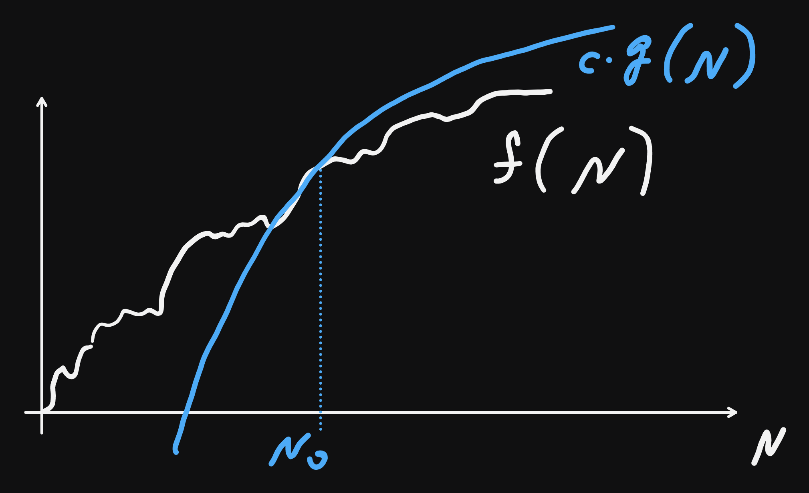
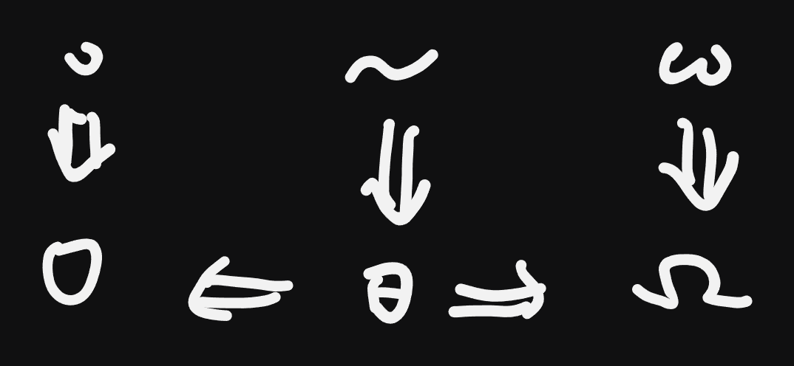

Week 6
VL 11 - 20.05.25
Efficiency
- this is the second most important property of an algorithm after correctness.
- Two aspects of efficiency:
Run-time
- run-time: wall-clock time, i.e. actual time. important for end-user, must be sufficiently fast depending on the requirements. Can be measured with tools like
timeitfor python of Google benchmark for c/c++.- improving runtime:
in interpreted languages like python the time critical portions can be delegated to C/C++/Fortran,(think CUDA an vectorization) can also be used for own code via
cython: a python subset..pyc\(\Rightarrow\).so: shared libraries in linux / macos.pyd: shared libraries in Windows
pybind11: binds c++
vectorization: very importane technique; instead of repeatedly evaluating (interpreting) the body of the loop, it is delegated to a c function, prevent the intrepretation overhead:
a = b * cinstead of
for i in rage(N): a[i] = b[i] * c[i]- in compiled languages the optimizatin is performed once during the compilation and modern compilers are very good at it:
- reorganize the execution order
- CPU pipeline:
- Decoding a commnad
- retrive Data
- execute the command
- write the results to memory 2nd step can cuase bottlenecks to the pipeline \(\Rightarrow\) caches. The optimizer tries to reorder the commands s.t. the result is not changed and bottlenecks are reduced.
- CPU pipeline:
- computations that are needed in multiple places can be perfomred once by the compiler.
- reorganize the execution order
- in compiled languages the optimizatin is performed once during the compilation and modern compilers are very good at it:
- improving runtime:
Complexity
runtime depends on concrete hardware
abstracting away from the hardware details and actual runtime, we turn our attention to general, hardware independent statements about the approximate number of atomic operations. this simplifies the problem a lot.
O-notation:

runtime for all \(N \geq N_0\): \(f(N) \leq c\cdot g(N)\), for some \(c\).
definition:
\[\mathcal{O}(g(N)) = \{f(N) : \exists c, N_0 \text{ s.t. } f(N) \leq c\cdot g(N), \forall N \geq N_0\}\]
\(\mathcal{O}(\bullet)\) is analgous to \(\leq\), i.e. \(f \in \mathcal{O}(g) \sim f\leq g\), and it indeed satisfies the axioms of a partial order:
- transitivity: f = O(g) and g = O(h) => f = O(h)
- reflexivity: f = O(f)
Summary and overview of axioms and algebraic properties:
\(f(n) = O(g(n))\) means:
\[ \exists\, c > 0,\, n_0 \in \mathbb{N} : \forall n \geq n_0,\, |f(n)| \leq c \cdot |g(n)| \]
We assume all functions are eventually non-negative, or we use absolute values for generality.
1. Reflexivity
Statement:
\[ f(n) = O(f(n)) \]
Proof:
Take \(c = 1\), then for all \(n\),
\[ |f(n)| \leq 1 \cdot |f(n)| \]
So the condition for \(O(f(n))\) is satisfied with \(n_0 = 0\).
2. Transitivity
Statement:
If \(f = O(g)\) and \(g = O(h)\), then \(f = O(h)\)
Proof:
- \(f(n) \leq c_1 \cdot g(n)\) for all \(n \geq n_1\)
- \(g(n) \leq c_2 \cdot h(n)\) for all \(n \geq n_2\)
Then for \(n \geq \max(n_1, n_2)\):
\[ f(n) \leq c_1 \cdot g(n) \leq c_1 c_2 \cdot h(n) \]
So \(f = O(h)\) with constant \(c = c_1 c_2\), and cutoff \(n_0 = \max(n_1, n_2)\).
3. Additivity
Statement:
If \(f = O(h)\) and \(g = O(h)\), then \(f + g = O(h)\)
Proof:
- \(f(n) \leq c_1 \cdot h(n)\) for \(n \geq n_1\)
- \(g(n) \leq c_2 \cdot h(n)\) for \(n \geq n_2\)
Then for \(n \geq \max(n_1, n_2)\):
\[ f(n) + g(n) \leq (c_1 + c_2) \cdot h(n) \]
So \(f + g = O(h)\) with constant \(c = c_1 + c_2\)
4. Scalar Multiplication
Statement:
If \(f = O(g)\), then \(c \cdot f = O(g)\) for any \(c > 0\)
Proof:
- \(f(n) \leq c_1 \cdot g(n)\) for \(n \geq n_0\)
- Then:
\[ c \cdot f(n) \leq c \cdot c_1 \cdot g(n) \]
So \(c \cdot f = O(g)\) with constant \(c' = c \cdot c_1\)
5. Max-Dominance Additivity
Statement:
\[ f(n) + g(n) = O(\max(f(n), g(n))) \]
Proof:
For all \(n\):
\[ f(n) + g(n) \leq 2 \cdot \max(f(n), g(n)) \]
So the sum is at most twice the maximum. Thus:
\[ f + g = O(\max(f, g)) \]
6. Multiplicativity
Statement:
If \(f = O(h)\) and \(g = O(k)\), then \(f \cdot g = O(h \cdot k)\)
Proof:
- \(f(n) \leq c_1 \cdot h(n)\), \(g(n) \leq c_2 \cdot k(n)\)
- Then:
\[ f(n) \cdot g(n) \leq c_1 c_2 \cdot h(n) \cdot k(n) \]
So \(f \cdot g = O(h \cdot k)\)
7. Monotonicity
Statement:
If \(f(n) \leq g(n)\) eventually, and \(g = O(h)\), then \(f = O(h)\)
Proof:
- \(g(n) \leq c \cdot h(n)\), and \(f(n) \leq g(n)\)
- Then:
\[ f(n) \leq g(n) \leq c \cdot h(n) \]
So \(f = O(h)\)
8. Invariance under Composition with Linear Functions
Statement:
If \(f(n) = O(g(n))\), and \(h(n) = an + b\), then:
\[ f(h(n)) = O(g(h(n))) \]
Proof:
- \(f(n) \leq c \cdot g(n)\) for \(n \geq n_0\)
- Since \(h(n) \to \infty\) as \(n \to \infty\), there exists \(n_1\) such that \(h(n) \geq n_0\)
- Then:
\[ f(h(n)) \leq c \cdot g(h(n)) \quad \text{for } n \geq n_1 \]
So \(f \circ h = O(g \circ h)\)
Summary Table (with Proofs Provided Above)
| Property | Statement |
|---|---|
| Reflexivity | \(f = O(f)\) |
| Transitivity | \(f = O(g), g = O(h) \Rightarrow f = O(h)\) |
| Additivity | \(f = O(h), g = O(h) \Rightarrow f + g = O(h)\) |
| Scalar Multiplication | \(f = O(g) \Rightarrow c \cdot f = O(g)\) |
| Max-Dominance | \(f + g = O(\max(f, g))\) |
| Multiplicativity | \(f = O(h), g = O(k) \Rightarrow fg = O(hk)\) |
| Monotonicity | \(f \leq g, g = O(h) \Rightarrow f = O(h)\) |
| Composition Invariance | \(f = O(g) \Rightarrow f(an + b) = O(g(an + b))\) |
VL 12 - 22.05.25
Complexity (Cont.)
- Goal: find a as simple as possible expression approximating the run time for large \(N\)s.
- focus on the relative change: \(\frac{f(2N)}{N}\), s.t. implementation details & wall clock time vernachlaessigt werden koennen
- \(\Rightarrow\) O-notation. More general: Landau Symbols.
Certainly! Here’s the completed table with the standard Landau symbols (asymptotic notations) used in algorithm analysis, including proper mathematical definitions and intuitive interpretations.
| Symbol | Definition | Intuition |
|---|---|---|
| \(f(N) \in O(g(N))\) | \(\exists\, c > 0,\, N_0 \in \mathbb{N},\ \forall N \geq N_0,\ f(N) \leq c \cdot g(N)\) | \(f(N) \lesssim g(N)\) (eventual upper bound) |
| \(f(N) \in o(g(N))\) | \(\forall\, c > 0,\, \exists N_0 \in \mathbb{N},\ \forall N \geq N_0,\ f(N) < c \cdot g(N)\) | \(f(N) \ll g(N)\) (strictly smaller order) |
| \(f(N) \in \Omega(g(N))\) | \(\exists\, c > 0,\, N_0 \in \mathbb{N},\ \forall N \geq N_0,\ f(N) \geq c \cdot g(N)\) | \(f(N) \gtrsim g(N)\) (eventual lower bound) |
| \(f(N) \in \omega(g(N))\) | \(\forall\, c > 0,\, \exists N_0 \in \mathbb{N},\ \forall N \geq N_0,\ f(N) > c \cdot g(N)\) | \(f(N) \gg g(N)\) (strictly greater order) |
| \(f(N) \in \Theta(g(N))\) | \(\exists\, c_1, c_2 > 0,\ N_0 \in \mathbb{N},\ \forall N \geq N_0,\ c_1 g(N) \leq f(N) \leq c_2 g(N)\) | \(f(N) \sim g(N)\) up to constant factors |
| \(f(N) \sim g(N)\) | \(\lim_{N \to \infty} \frac{f(N)}{g(N)} = 1\) | \(f(N)\) and \(g(N)\) grow identically |
There is an analogous landau notation when \(N \to 0\) - useful in numerical mathematics to express how fast an approxaton error appraoches 0 w.r.t. the steps of algorithms.
Implications Diagram:

Proving with Mathematical Induction
To prove \(f(n) \in O(g(n))\), we aim to find constants \(c > 0\) and \(N_0 \in \mathbb{N}\) such that:
\[ \forall n \geq N_0:\quad f(n) \leq c \cdot g(n) \]
We proceed by mathematical induction, starting at \(n = N_0\).
Step 1: Choose constants
Choose appropriate constants \(c > 0\) and \(N_0 \in \mathbb{N}\) based on the growth of \(f(n)\) and \(g(n)\).
Step 2: Induction Base (IB)
Show that the inequality holds at the base case \(n = N_0\):
\[ f(N_0) \leq c \cdot g(N_0) \]
Step 3: Induction Step (IS)
Assume the inductive hypothesis for some \(n \geq N_0\):
\[ f(n) \leq c \cdot g(n) \]
Then prove it holds for \(n + 1\):
\[ f(n+1) \leq c \cdot g(n+1) \]
If both steps succeed, the inequality holds for all \(n \geq N_0\), and hence \(f(n) \in O(g(n))\).
Example: Prove \(f(n) = 5n^2 + 3n \in O(n^2)\)
Goal
Find constants \(c > 0\) and \(N_0 \in \mathbb{N}\) such that:
\[ f(n) = 5n^2 + 3n \leq c \cdot n^2 \quad \text{for all } n \geq N_0 \]
Step 1: Choose constants
Try \(c = 6\). We check when:
\[ 5n^2 + 3n \leq 6n^2 \quad \iff \quad -n^2 + 3n \leq 0 \quad \iff \quad n(n - 3) \leq 0 \]
This holds for \(n \leq 3\), so the inequality is true when \(n \geq 3\). Choose:
- \(c = 6\)
- \(N_0 = 3\)
Step 2: Induction Base (IB)
Check at \(n = 3\):
\[ f(3) = 5 \cdot 9 + 3 \cdot 3 = 54 \\ c \cdot 3^2 = 6 \cdot 9 = 54 \\ \Rightarrow f(3) = c \cdot n^2 \]
✓ Base case holds.
Step 3: Induction Step (IS)
Assume for some \(n \geq 3\):
\[ f(n) \leq 6n^2 \]
Show:
\[ f(n+1) \leq 6(n+1)^2 \]
Compute:
\[ f(n+1) = 5(n+1)^2 + 3(n+1) = 5n^2 + 10n + 5 + 3n + 3 = 5n^2 + 13n + 8 \]
\[ 6(n+1)^2 = 6n^2 + 12n + 6 \]
Compare:
\[ 5n^2 + 13n + 8 \leq 6n^2 + 12n + 6 \quad \iff \quad 0 \leq n^2 - n - 2 \quad \iff \quad (n - 2)(n + 1) \geq 0 \]
This inequality holds for \(n \geq 2\), and our induction starts at \(n \geq 3\), so:
✓ Induction step verified.
Conclusion
By mathematical induction, we have shown that:
\[ f(n) = 5n^2 + 3n \leq 6n^2 \quad \text{for all } n \geq 3 \Rightarrow f(n) \in O(n^2) \]
with constants \(c = 6\), \(N_0 = 3\). □
Let me know if you want to adapt this to other asymptotic bounds like \(\Omega(n^2)\) or \(\Theta(n^2)\), or if you’d like a PDF-ready version.
Alternative Definitnios with Limits
\[ \begin{array}{|c|c|c|c|} \hline \textbf{Notation} & \textbf{Limit Definition} & \textbf{Quantifier Definition} & \textbf{Intuition} \\ \hline f(n) \in o(g(n)) & \displaystyle \lim_{n \to \infty} \frac{f(n)}{g(n)} = 0 & \forall c > 0,\ \exists N_0:\ \forall n \geq N_0,\ f(n) < c \cdot g(n) & \text{Strictly smaller order} \\ \hline f(n) \in O(g(n)) & \displaystyle \limsup_{n \to \infty} \left| \frac{f(n)}{g(n)} \right| < \infty & \exists c > 0,\ \exists N_0:\ \forall n \geq N_0,\ f(n) \leq c \cdot g(n) & \text{Grows no faster (upper bound)} \\ \hline f(n) \in \Theta(g(n)) & \displaystyle \lim_{n \to \infty} \frac{f(n)}{g(n)} = L,\ 0 < L < \infty & \exists c_1, c_2 > 0,\ \exists N_0:\ \forall n \geq N_0,\ c_1 g(n) \leq f(n) \leq c_2 g(n) & \text{Same order (tight bound)} \\ \hline f(n) \in \Omega(g(n)) & \displaystyle \liminf_{n \to \infty} \left| \frac{f(n)}{g(n)} \right| > 0 & \exists c > 0,\ \exists N_0:\ \forall n \geq N_0,\ f(n) \geq c \cdot g(n) & \text{Grows at least as fast (lower bound)} \\ \hline f(n) \in \omega(g(n)) & \displaystyle \lim_{n \to \infty} \frac{f(n)}{g(n)} = \infty & \forall c > 0,\ \exists N_0:\ \forall n \geq N_0,\ f(n) > c \cdot g(n) & \text{Strictly faster growth} \\ \hline f(n) \sim g(n) & \displaystyle \lim_{n \to \infty} \frac{f(n)}{g(n)} = 1 & \forall \varepsilon > 0,\ \exists N_0:\ \forall n \geq N_0,\ (1 - \varepsilon)g(n) < f(n) < (1 + \varepsilon)g(n) & \text{Asymptotically equal (same leading term)} \\ \hline \end{array} \]
Exmamples from Sorting
- selection sort: \(T(N) = \frac{N}{2}(N + 1) \in \mathbb{O}(N^2)\)
- insertion sort (typical case): \(T(N) = \frac{N}{4}(N + 1) \in \mathcal{O}(N^2)\)
- quick sort (typical case): \(T(N) = c \cdot (N + 1) \ln{N + 1} \in \mathcal{O}(N \cdot \log{N})\)
Example - Running Mean
def running_mean(a, k) # k size of the Window, N = len(a)
r = [0] * len(a) # output array O(N)
if k > len(a): # O(1)
raise ValueError("k > N") # O(1)
for j in range(k - 1, len(a)): # O(N - k + 1) == O(N)
for i in range(j - k + 1, j + 1): # O(k)
r[j] += a[i] # summing up
r[j] = r[j] / k # mean
return rHow to obtain the complexity of the whole algorithm based on the complexity of individual lines?
algebraic rules of Complexity classes
sequence rule: for consecutive execution the more expensive command decisive.
LetC := C1; C2, s.t.C1 # O(f1(N)) C2 # O(f2(N))Then complexity of
Cis \(max(\mathcal{O}(f_1(N)), \mathcal{O}(f_2(N)))\)Nesting rule: complexity is the product
Let
P:for k in # O(f(N)): C # O(g(N))Then complexity of
Pis \(\mathcal{O}(f(N) \cdot g(N))\).But this holds if the body of the loop always has the same complexity. If it’s variable we can take always the worst case \(g(N) = max_k(g(N, k))\) (may be too pessimistic) or sum up for each iteration.
Applying these rules to the running mean example from above we get:
- before the loop: \(\mathcal{O}(N) + \mathcal{O}(1) + \mathcal{O}(1) \Rightarrow \mathcal{O}(N)\)
- after the loop: \(\mathcal{O}(1)\)
- inner loop:
- number of iterations: \(\mathcal{O}(k)\), loop body: \(\mathcal{O}(1) \Rightarrow \mathcal O(1 \cdot k) = \mathcal{O}(k)\)
- outer loop:
- Number of iterations: N - k + 1, loopbody O(k) + O(1) = O(k)
- => product: O((N - k + 1)*k) = O(Nk -k^2 + k) = O(kN) = O(N)
- alltogether: O(N) + O(1) + O(kN) = O(kN). we have k = cN. if c == 1